注意事項
このページの範囲
- 成人急性期の鼻カニューレ式HFNC
- このページで扱う内容
- 導入時の確認
- 設定の読み方
- 観察
- 日常ケア
- このページの対象外
- 小児・新生児
- 在宅
- 気管切開用インターフェース
- 疾患別の開始・離脱プロトコルは院内手順へ
HFNCとは
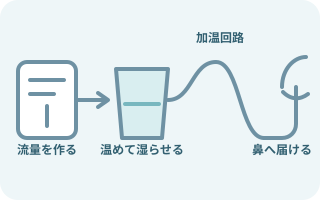
高流量のガスを、温めて湿らせて送る
ガスが通る順序
- 1. フロージェネレーター
- 2. 加湿チャンバー
- 3. 加温回路
- 4. 専用鼻カニューレ
- 患者の吸気需要に近い流量を届ける。
- 設定したFiO2を保ちやすくする。
- 機種により構成と設定範囲が違う。
- 流量調整で合わせる条件
- 患者の吸気需要
- 呼吸状態
- 快適性
- 採用機器の範囲
これらの条件と指示に合わせて流量を調整する。
使う場面と限界
検討される代表的な場面
- 通常酸素療法で目標酸素化を保ちにくい低酸素性急性呼吸不全
- 抜管後の呼吸補助
- NIV休止中の酸素化維持
- 患者に必要なケア・活動
- 会話
- 排痰
- 口腔ケア
HFNCだけで支えられるか再評価する場面
- 気道を守れない、呼吸停止・切迫停止
- 再評価する呼吸・意識の変化
- 強い呼吸仕事量
- 急速な疲弊
- 意識悪化
- 再評価する全身・換気の変化
- 循環不安定
- 重いアシドーシス
- 進行する換気不全
- 目標SpO2を保てず、必要FiO2が増え続ける
- COPDの急性高二酸化炭素血症では、HFNCをNIVの代用と決めつけない。
- NIVを先に検討する指針がある。
3つの設定を分けて読む
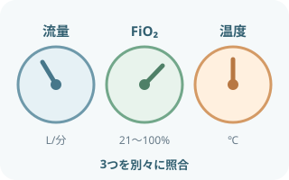
流量・FiO2・温度は別のつまみ
流量が関わるもの
- 吸気需要
- 呼吸仕事量
- 快適性
FiO2：目標SpO2へ調整する。
温度：加温加湿と忍容性に関わる。
- 指示された流量（L/分）
- 指示されたFiO2または酸素濃度（%）
- 指示された温度設定（℃）
- 目標SpO2範囲
- 再評価時刻と治療強化の条件
- Airvo 2の設定範囲
- 流量 2〜60L/分
- FiO2 0.21〜1.0
設定温度- 31℃
- 34℃
- 37℃
- 設定範囲は機種で異なり、実際の設定は患者の状態と医師の指示で決める。
カニューレサイズと装着

- 鼻中隔は左右の鼻腔を分ける中央の壁。
- 鼻翼は鼻孔の外側にあたる。
- 鼻中隔へ押しつけず、接触部位の状態と耳・頬の圧迫も確認する。
- 図はカニューレの挿入深さや製品の適合を指定しない。
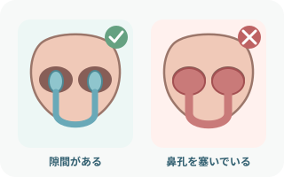
鼻孔を塞がず、鼻中隔へ押しつけない
プロングと鼻孔の間に隙間を残す。
装着時の確認
- 左右の向き
- 深さ
- チューブの引っ張り
- 耳・頬の圧迫
使用製品のサイズ表で選ぶ。
- カニューレ径を鼻孔径の約50%以下とする資料もある。
- 全製品共通の固定値ではないため、使用するカニューレのサイジングガイドと電子添文を確認する。
なぜ呼吸が楽になるのか
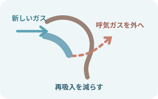
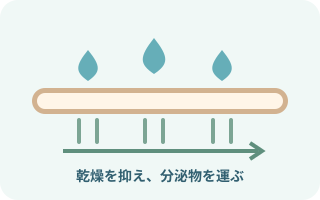
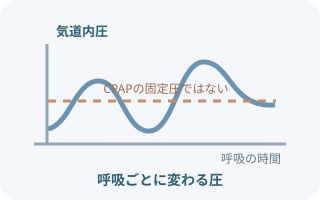
- 圧が変わる条件
- 流量
- 呼吸
- 口の開閉
- カニューレ適合
- CPAPの設定圧とは別物。
効果は一つではない。
重なって呼吸を支える作用
- 高流量
- 安定したFiO2
- 死腔洗い流し
- 加温加湿
- 動的な陽圧
必要物品
- HFNC対応フロージェネレーター
- 指定された加湿チャンバー
- 指定された給水バッグまたは滅菌蒸留水
- 指定された加温送気回路
- 患者に合うサイズの専用鼻カニューレ
- 酸素供給源と指定接続部品
- パルスオキシメータ
- 必要時、心電図・血圧モニター
- 必要時、皮膚保護材
- 吸引物品
- 救急物品
- 気道確保物品
- 互換性の確認
- 水
- 回路
- カニューレ
- 酸素接続部品
- 推奨されない組み合わせや再使用禁止品を使わない。
導入手順
- 本人・目的・指示を照合指示との照合
- 流量
- FiO2
- 温度
- 目標SpO2
- 再評価の条件
- 治療強化の条件
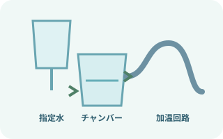
水・チャンバー・回路を組む組み立て後の確認- 水位
- 給水
- 回路のねじれ
- 接続の緩み
採用機器の手順どおりに接続する。
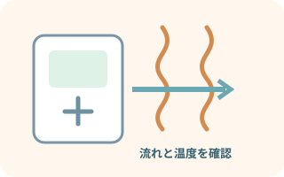
起動し、加温を待つカニューレ装着前に確認- ガスが流れること
- 設定温度への準備状態
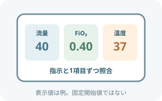
指示された3設定へ3設定を別々に照合- 流量
- FiO2
- 温度
画面表示と酸素接続も確認する。
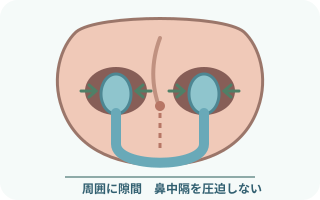
隙間を残して装着- 鼻中隔へ当てず、締めすぎない。
- チューブの重みと耳・頬の圧迫を除く。
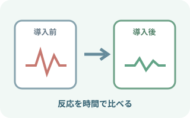
早期に反応を再評価早期再評価の記録- 呼吸数
- 努力呼吸
- SpO2
- 意識
- 循環
- 快適性
- 必要FiO2の変化
観察項目
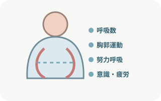
呼吸と全身状態の観察
- 呼吸数
- 深さ
- 努力呼吸
- 会話
- 胸郭運動
- 呼吸音
- 意識
- 循環
- 疲労

酸素化と換気の観察
- SpO2の値
- SpO2の推移
- SpO2の信号
- 設定FiO2
- 必要時の血液ガス
CO2貯留も見る。
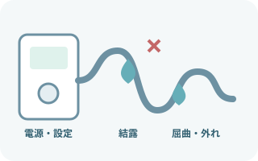
機器・回路・水の観察
- 電源
- アラーム
- 流量
- 温度
- 接続
- 屈曲
- 結露
- 水位
- 給水
- 酸素供給
接触部位と快適性の観察
- 鼻中隔
- 鼻腔
- 耳
- 頬
接触部位で確認する所見
- 発赤
- 痛み
- 圧迫
快適性の確認
- 乾燥
- 熱感
- 騒音
- 食事
- 睡眠
- 設定値だけでなく、同じFiO2で呼吸が楽になったかを確認する。
- 必要FiO2や呼吸仕事量が増えていないかを、時系列で見る。
回路・結露・アラーム
結露を患者側へ流さない
- 回路の低い位置と結露量を確認
- 患者側へ水が流れない向きで扱う
- 排水方法は機器・回路の手順へ
- 送気チューブを布やタオルで覆わない
アラームは消す前に原因を見る
- 供給と水の確認
- 電源
- 酸素供給
- 給水
- 水位
- 回路の確認
- 回路の外れ
- 屈曲
- 閉塞
- 破損
- カニューレと鼻孔の確認
- カニューレの外れ
- 分泌物
- 鼻孔閉塞
- 患者の呼吸とSpO2を同時に確認
治療失敗を疑う変化
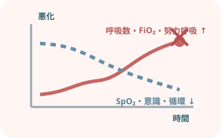
単発値ではなく、悪化する方向を見る
増加・増強する指標
- 呼吸数
- 努力呼吸
- 必要FiO2
悪化する所見
- SpO2
- 意識
- 循環
悪化時に再評価する情報
- 血液ガス
- 胸部所見
- 原因疾患
早く報告・応援要請する。
日常ケア
- 鼻腔・口腔内の乾燥、分泌物を確認
- 口腔ケアと排痰を援助
- 除圧する接触部位
- 鼻中隔
- 鼻翼
- 耳
- 頬
- カニューレ位置と固定を定期的に確認
- 食事中の呼吸状態と誤嚥リスクを評価
- 体位調整後に回路と設定を再確認
- 交換時期を管理するもの
- 水
- 回路
- カニューレ
- 「鼻カニューレだから必ず食べられる」とは限らない。
- 食事の可否を判断する情報
- 呼吸状態
- 嚥下機能
- 流量
- 食形態
- 医師・ST等の評価
- 院内手順
出典
- European Respiratory Society「ERS clinical practice guidelines: high-flow nasal cannula in acute respiratory failure」2022
- AARC「Management of Adult Patients With Oxygen in the Acute Care Setting」2022
- Fisher & Paykel Healthcare「Airvo 2 ネーザルハイフローシステム」
- PMDA 医療機器電子添文「F&P オプティフロー（MYDUET）」2024年10月作成
- PMDA 医療機器電子添文「F&P Optiflow Junior」2026年5月改訂
- PMDA 医療機器電子添文「フロージェネレーターmyAirvo用回路」